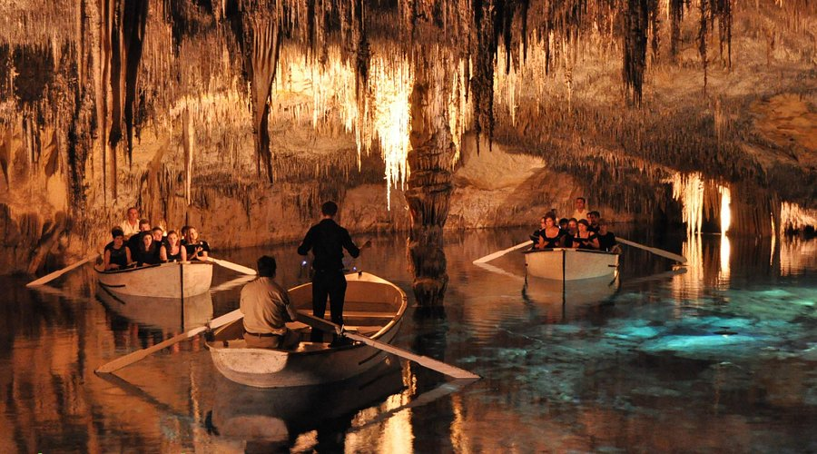

Palma Cathedral (La Seu)
A majestic Gothic cathedral overlooking the sea, with impressive architecture and stunning views.

A majestic Gothic cathedral overlooking the sea, with impressive architecture and stunning views.

A mountain range offering hiking trails, scenic views, and picturesque villages like Deià and Valldemossa.

A series of spectacular caves with an underground lake, one of the island's most famous natural wonders.